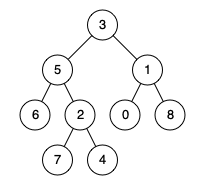

D瓜哥的思路：先找出一条从根节点到某个节点的路径；然后从这条路径上以此去寻找另外一个节点。找到这返回此节点。
思考题：如何按照"路径"的思路实现一遍？
参考资料
Given a binary tree, find the lowest common ancestor (LCA) of two given nodes in the tree.
According to the definition of LCA on Wikipedia: “The lowest common ancestor is defined between two nodes p and q as the lowest node in T that has both p and q as descendants (where we allow a node to be a descendant of itself).”
Given the following binary tree: root = [3,5,1,6,2,0,8,null,null,7,4]

Example 1:
Input: root = [3,5,1,6,2,0,8,null,null,7,4], p = 5, q = 1 Output: 3 Explanation: The LCA of nodes5and1is3.
Example 2:
Input: root = [3,5,1,6,2,0,8,null,null,7,4], p = 5, q = 4 Output: 5 Explanation: The LCA of nodes5and4is5, since a node can be a descendant of itself according to the LCA definition.
Note:
-
All of the nodes' values will be unique.
-
p and q are different and both values will exist in the binary tree.
1
2
3
4
5
6
7
8
9
10
11
12
13
14
15
16
17
18
19
20
21
22
23
24
25
26
27
28
29
30
31
32
33
34
35
36
37
38
39
40
41
42
43
44
45
46
47
48
49
50
51
52
53
54
55
56
57
58
59
60
61
62
63
64
65
66
67
68
69
70
71
72
73
74
75
76
77
78
79
80
81
82
83
84
85
86
87
package com.diguage.algorithm.leetcode;
import com.diguage.algorithm.util.TreeNode;
import java.util.Arrays;
import java.util.Objects;
import static com.diguage.algorithm.util.TreeNodeUtils.buildTree;
/**
* = 236. Lowest Common Ancestor of a Binary Tree
*
* https://leetcode.com/problems/lowest-common-ancestor-of-a-binary-tree/[Lowest Common Ancestor of a Binary Tree - LeetCode]
*
* Given a binary tree, find the lowest common ancestor (LCA) of two given nodes in the tree.
*
* According to https://en.wikipedia.org/wiki/Lowest_common_ancestor[the definition of LCA on Wikipedia]: “The lowest common ancestor is defined between two nodes p and q as the lowest node in T that has both p and q as descendants (where we allow **a node to be a descendant of itself**).”
*
* Given the following binary tree: root = [3,5,1,6,2,0,8,null,null,7,4]
*
* .Example 1:
* [source]
* ----
* Input: root = [3,5,1,6,2,0,8,null,null,7,4], p = 5, q = 1
* Output: 3
* Explanation: The LCA of nodes 5 and 1 is 3.
* ----
*
* .Example 2:
* [source]
* ----
* Input: root = [3,5,1,6,2,0,8,null,null,7,4], p = 5, q = 4
* Output: 5
* Explanation: The LCA of nodes 5 and 4 is 5, since a node can be a descendant of itself according to the LCA definition.
* ----
*
*
* Note:
*
* All of the nodes' values will be unique.
* p and q are different and both values will exist in the binary tree.
*
* @author D瓜哥, https://www.diguage.com/
* @since 2020-01-26 21:14
*/
public class _0236_LowestCommonAncestorOfABinaryTree {
private TreeNode result;
/**
* Runtime: 9 ms, faster than 23.17% of Java online submissions for Lowest Common Ancestor of a Binary Tree.
*
* Memory Usage: 45.5 MB, less than 5.55% of Java online submissions for Lowest Common Ancestor of a Binary Tree.
*
* Copy from: https://leetcode.com/problems/lowest-common-ancestor-of-a-binary-tree/solution/[Lowest Common Ancestor of a Binary Tree solution - LeetCode]
*/
public TreeNode lowestCommonAncestor(TreeNode root, TreeNode p, TreeNode q) {
recurseTree(root, p, q);
return this.result;
}
private boolean recurseTree(TreeNode currentNode, TreeNode p, TreeNode q) {
if (Objects.isNull(currentNode)) {
return false;
}
int left = recurseTree(currentNode.left, p, q) ? 1 : 0;
int right = recurseTree(currentNode.right, p, q) ? 1 : 0;
int mid = (currentNode.equals(p) || currentNode.equals(q)) ? 1 : 0;
if (left + mid + right >= 2) {
this.result = currentNode;
}
return (left + mid + right) > 0;
}
public static void main(String[] args) {
_0236_LowestCommonAncestorOfABinaryTree solution = new _0236_LowestCommonAncestorOfABinaryTree();
TreeNode r1 = solution.lowestCommonAncestor(buildTree(Arrays.asList(3, 5, 1, 6, 2, 0, 8, null, null, 7, 4)), new TreeNode(5), new TreeNode(1));
System.out.println((r1.val == 3) + " : " + r1);
TreeNode r2 = solution.lowestCommonAncestor(buildTree(Arrays.asList(3, 5, 1, 6, 2, 0, 8, null, null, 7, 4)), new TreeNode(5), new TreeNode(4));
System.out.println((r2.val == 3) + " : " + r2);
}
}